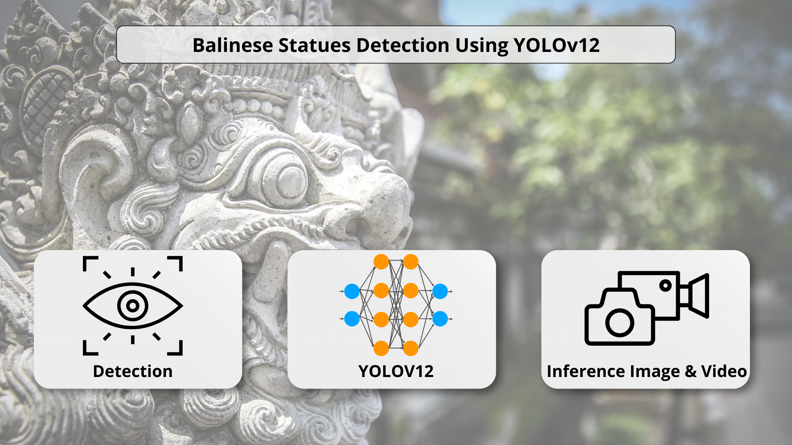
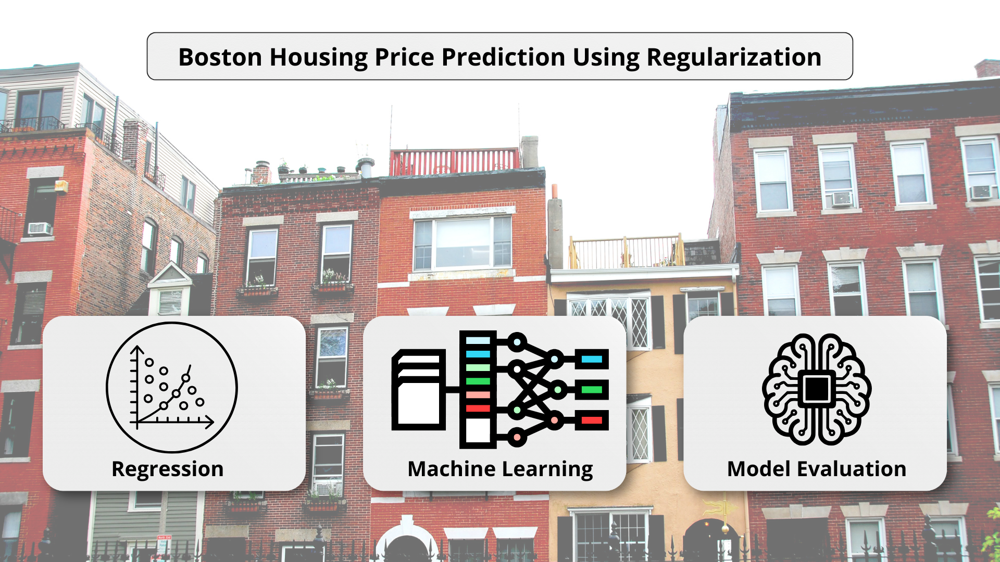
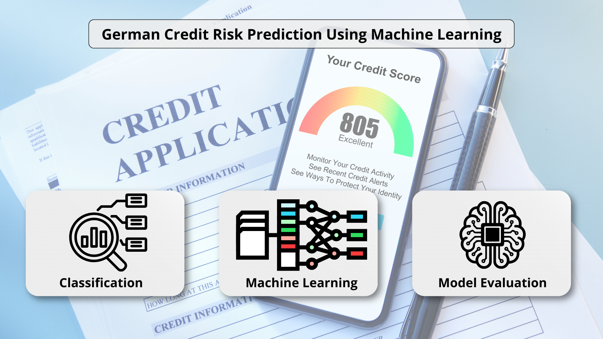
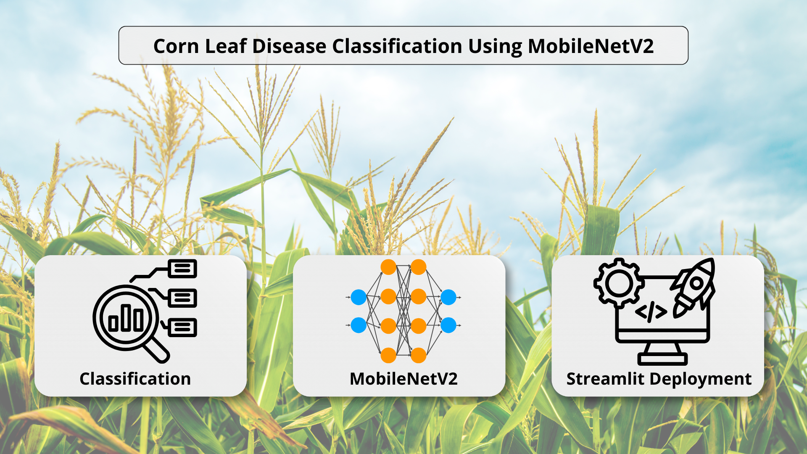
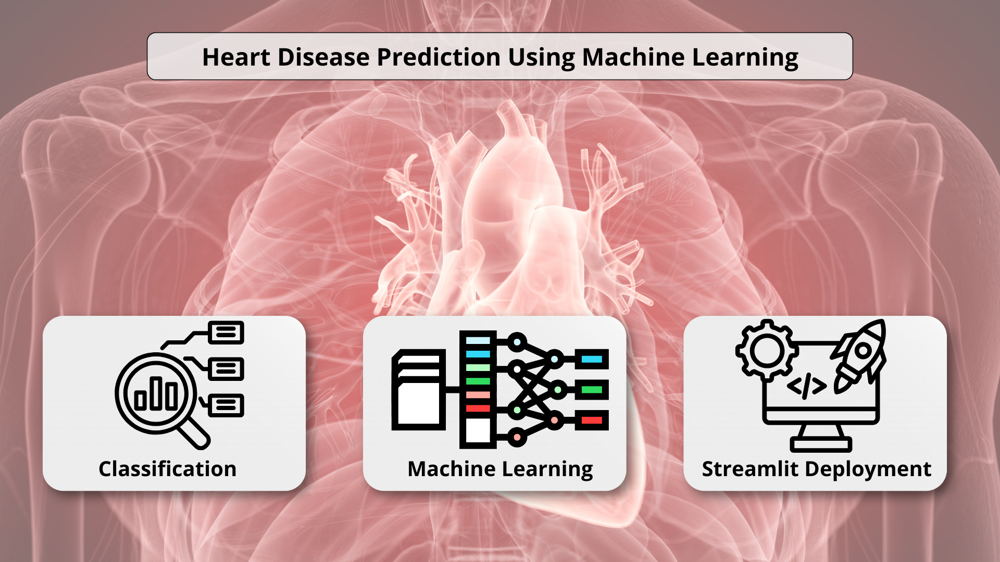

All Projects Repository
A complete collection of my technical implementations.

Statues Object Detection
Developed a YOLO-based object detection model to identify eight categories of Balinese statues from images and videos, including dataset preparation, annotation, augmentation, model training, and performance evaluation.
Telco Customer Churn Prediction
Built a machine learning model to predict customer churn for a telecommunications company, improving retention strategies and reducing revenue loss.

Boston Husing Price Prediction
Built a machine learning model to predict housing prices in Boston based on various features.

German Credit Risk
Build a machine learning model to predict credit risk based on user financial data.

Corn Leaf Disease Classification
Built a deep learning model to classify different diseases affecting corn leaves, aiding in early detection and treatment.
Dashboard Data Superstore
Created an interactive dashboard to visualize sales data and performance metrics for a superstore chain.

Bali Tourism AI Guide
An AI-powered guide for tourists visiting Bali, providing personalized recommendations and information about local attractions, restaurants, and cultural sites.

Heart Disease Prediction
A machine learning model to predict the likelihood of heart disease based on patient data.